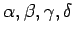
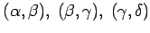
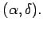
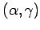
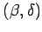
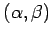
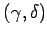

Beim Schnitt zweier Geraden g1,g2 einer Ebene treten vier verschiedene Winkel  auf.
Man unterscheidet Nebenwinkel und Scheitelwinkel, außerdem Komplementwinkel und Supplementwinkel.
| Beispiel |
|
In der Abbildung sind es die Winkelpaare  und  |
| Beispiel |
|
In der Abbildung sind  und  Scheitelwinkel. |
| Beispiel |
|
In der Abbildung sind die Winkelpaare  oder  Supplementwinkel. |